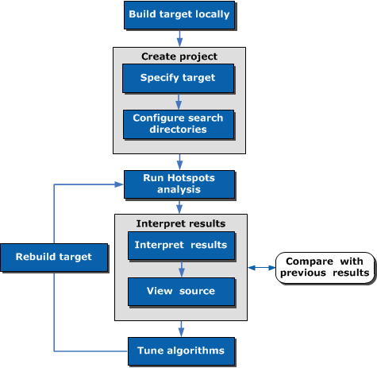

You can use the
Intel® VTune™ Amplifier
to identify the most performance-critical functions in an application running
on the Intel® Xeon Phi™ coprocessor (code name: Knights Corner). This tutorial
guides you through workflow steps running Advanced Hotspots analysis type on a
sample application,
matrix.
You can use the
Intel® VTune™ Amplifier
to identify the most performance-critical functions in an application running
on the Intel® Xeon Phi™ coprocessor (code name: Knights Corner). This tutorial
guides you through workflow steps running Advanced Hotspots analysis type on a
sample application,
matrix.

Step 1: Prepare for analysis |
|
Step 2: Find hotspots |
|
Step 3: Eliminate hotspots |
|
Step 4: Check your work |
Optimization Notice |
|---|
Intel's compilers may or may not optimize to the same degree for non-Intel microprocessors for optimizations that are not unique to Intel microprocessors. These optimizations include SSE2, SSE3, and SSSE3 instruction sets and other optimizations. Intel does not guarantee the availability, functionality, or effectiveness of any optimization on microprocessors not manufactured by Intel. Microprocessor-dependent optimizations in this product are intended for use with Intel microprocessors. Certain optimizations not specific to Intel microarchitecture are reserved for Intel microprocessors. Please refer to the applicable product User and Reference Guides for more information regarding the specific instruction sets covered by this notice. Notice revision #20110804 |